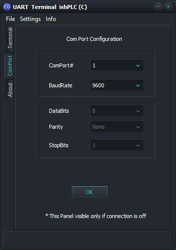
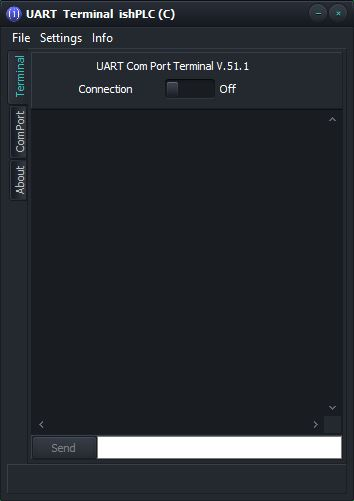
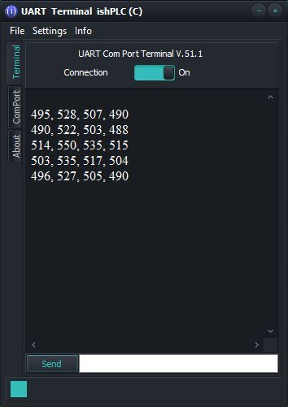
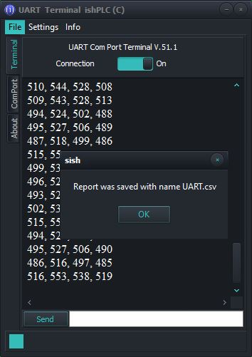
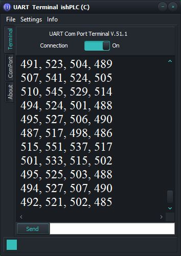
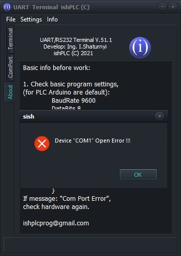
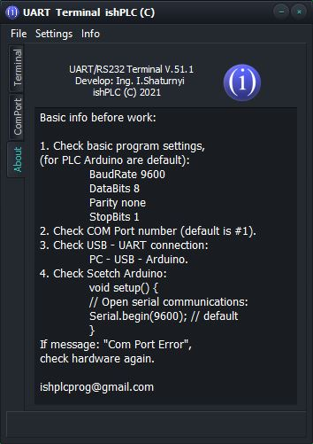
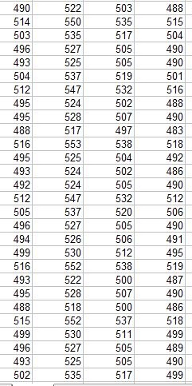
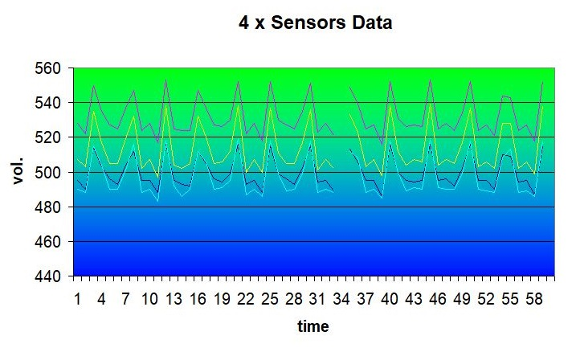

UART Terminal V51
"UART Terminal Style: Dark" Settings COM Port

Basic info before work:
1. Check basic program settings,
(for PLC Arduino are default):
BaudRate 9600
DataBits 8 (pro ver.)
Parity none (pro ver.)
StopBits 1 (pro ver.)
2. Check COM Port number (default is #1).
3. Check USB - UART connection:
PC - USB - Arduino.
4. Check Scetch Arduino:
void setup() {
// Open serial communications:
Serial.begin(9600); // default
}
If message: "Com Port Error",
check hardware again.
The program "UART Terminal ishPLC (C) Free" ver.51.1 is a simple UART terminal for working with a PLC, including an Arduino controller. This version implements the program's features: * reliable, lightweight program, suitable for both beginners and professionals. * intuitive interface, easy navigation through the program tabs. * Choice of COM Port from 1 to infinity. * Selection of the baud rate of the terminal and PLC: either fixed by the standard or any other value that can be entered in the Baud Rate selection field (This also applies to the selection of the port number). (* * These options are used for advanced users, in the professional version). * Ability to increase or decrease the terminal font. * Ability to receive data from the PLC, and send data to the PLC. * Ability to write a terminal report to the log file in the * .csv format (coma saparated vol.), Which allows you to open the UART.csv file both in any text editor and in electronic tables: for analysis, charting, etc. * The program has been tested in various modes, is easy to use, consumes a minimum of resources (up to 2.2 MB) of RAM, runs on any version from XP, 7 to 10.
"UART Terminal ishPLC(C) Pro" ver.51
functionality added in the "professional" version:(in developing)
* selection of DataBits, Parity, StopBits
* work on RS485
* sending commands from the terminal line to the COM Port
* sending a file
Terminal window

Connected. Data registration.

Saving Report

Font -> Size+ (zoom+)

COM Port "Error"

"About" Panel

Data in El.Table (*.csv format)

Data. Chart in El.Table

Video: how it works...
UART Terminal V.51 (free and pro)
I.Shaturny ishPLC © 2021

ishplcprog@gmail.com